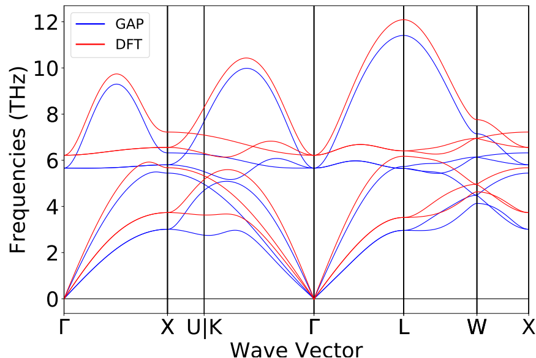
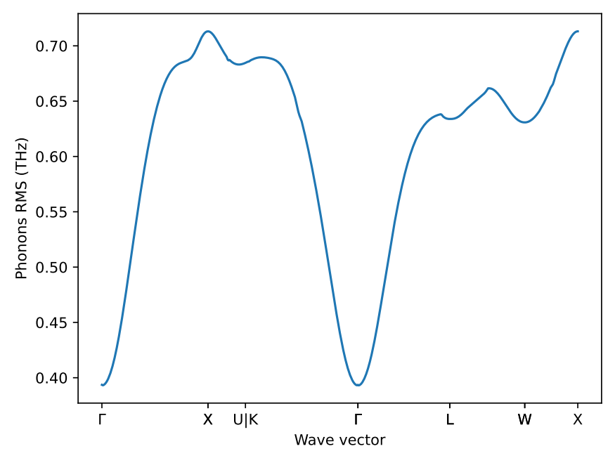

Out-of-the-box workflow#
Phonon-accurate machine-learned potentials workflow#
This tutorial will demonstrate how to use autoplex with its default setup and settings.
ℹ️ The default setting might not be sufficient or not suitable in any other way for your calculations. Carefully check your results with the default setup and adjust the settings when needed.
General workflow#
The complete workflow of autoplex involves the data generation
(including the execution of VASP calculations),
the fitting of the machine-learned interatomic potential (MLIP) and the benchmark to the DFT results.
We also have an iterative version of this workflow that reruns the complete workflow until a certain quality of the phonons is reached. It is described below.
Before running the workflow#
As a first step, you should check if our algorithm can generate supercells that are small enough to be treated with DFT (not too many atoms) and large enough to result into reliable phonon properties. To do so, you can use the following function:
from mp_api.client import MPRester
from autoplex.data.phonons.utils import check_supercells
# first you can download structures from the Materials Project
mpr = MPRester(api_key='YOUR_MP_API_KEY')
structure_list = []
mpids = ["mp-149","mp-165","mp-168","mp-16220","mp-571520","mp-971661","mp-971662","mp-999200", "mp-1072544", "mp-1079297", "mp-1095269", "mp-1200830", "mp-1203790"]
for mpid in mpids:
structure = mpr.get_structure_by_material_id(mpid)
structure_list.append(structure)
# then you can use the check_supercells function
check_supercells(structure_list, mpids, min_length=18, max_length=25, fallback_min_length=10, min_atoms=100, max_atoms=500, tolerance=0.1)
check_supercells will list all structures that should likely be excluded.
However, please carefully check yourself as your local memory requirements might be different.
Remove all structures which you cannot treat computationally
(e.g., structures with lattice parameters larger than 25 Å or more than 500 atoms).
Using the MPRester is a convenient way to draw structures from the Materials Project database using their MP-ID.
Test DFT run times and memory requirements#
To get a rough estimate of DFT requirements for the supercells that you have chosen, you can use the DFTSupercellSettingsMaker
to test the DFT run times for an undisplaced supercell of a similar size to the ones we will use in the overall workflow.
from jobflow.core.flow import Flow
from mp_api.client import MPRester
from autoplex.auto.phonons.flows import DFTSupercellSettingsMaker
mpr = MPRester(api_key='YOUR_MP_API_KEY')
structure_list = []
benchmark_structure_list = []
mpids = ["mp-22905"]
# you can put as many mpids as needed e.g. mpids = ["mp-22905", "mp-1185319"] for all LiCl entries in the Materials Project
mpbenchmark = ["mp-22905"]
for mpid in mpids:
structure = mpr.get_structure_by_material_id(mpid)
structure_list.append(structure)
for mpbm in mpbenchmark:
bm_structure = mpr.get_structure_by_material_id(mpbm)
benchmark_structure_list.append(bm_structure)
dft_supercell_check_flow = DFTSupercellSettingsMaker().make(
structure_list=structure_list, mp_ids=mpids)
dft_supercell_check_flow.name = "tutorial"
autoplex_flow = dft_supercell_check_flow
This will allow you to check whether memory requirements on your supercomputers are enough and if you might need to switch to smaller systems.
Now start the workflow#
We will use jobflow to control the execution of our jobs in form of flows and jobs.
The only module we need to import from autoplex is the CompleteDFTvsMLBenchmarkWorkflow.
Next, we are going to construct the workflow based on the rocksalt-type LiCl (mp-22905).
Remember to replace YOUR_MP_API_KEY with your personal Materials Project API key.
from mp_api.client import MPRester
from autoplex.auto.phonons.flows import CompleteDFTvsMLBenchmarkWorkflow
mpr = MPRester(api_key='YOUR_MP_API_KEY')
structure_list = []
benchmark_structure_list = []
mpids = ["mp-22905"]
# you can put as many mpids as needed e.g. mpids = ["mp-22905", "mp-1185319"] for all LiCl entries in the Materials Project
mpbenchmark = ["mp-22905"]
for mpid in mpids:
structure = mpr.get_structure_by_material_id(mpid)
structure_list.append(structure)
for mpbm in mpbenchmark:
bm_structure = mpr.get_structure_by_material_id(mpbm)
benchmark_structure_list.append(bm_structure)
complete_flow = CompleteDFTvsMLBenchmarkWorkflow(
apply_data_preprocessing=True,
).make(
structure_list=structure_list, mp_ids=mpids,
benchmark_structures=benchmark_structure_list, benchmark_mp_ids=mpbenchmark)
complete_flow.name = "tutorial"
autoplex_flow = complete_flow
The only default information we need to provide is which structures we want to calculate and use for the MLIP fitting
and which structures we want to benchmark to.
The autoplex workflow will then perform automated VASP and phonopy calculations, MLIP fits, and benchmarks.
Of course, you can change and adjust the settings to your own needs, e.g. by setting a smaller supercell for the
phonopy calculations using CompleteDFTvsMLBenchmarkWorkflow(min_length=15).make(...).
You can find more details on the subsequent tutorial pages.
With additional flows or jobs in the [complete_flow] list,
you can combine the autoplex flow with other flows and jobs.
As the mp_id parameter is a string, you can also use any other unique structure object identifier instead.
The following workflow diagram will give you an overview of the flows and jobs in the default autoplex workflow:
flowchart TD
becfe032-c5ca-4398-9691-0f16baacb237(external) -->|'rattled_dir'| 42331e94-129c-45ef-9116-770369f6eab1(data_preprocessing_for_fitting)
becfe032-c5ca-4398-9691-0f16baacb237(external) -->|'rattled_dir'| 56cb031a-0cd7-4aa5-b857-c2c4d17e86c4(complete_benchmark_mp-22905)
a0286b49-988f-4628-8da6-270caade44bc(external) -->|'phonon_dir', 'phonon_data'| 42331e94-129c-45ef-9116-770369f6eab1(data_preprocessing_for_fitting)
a0286b49-988f-4628-8da6-270caade44bc(external) -->|'phonon_dir', 'phonon_data'| 56cb031a-0cd7-4aa5-b857-c2c4d17e86c4(complete_benchmark_mp-22905)
3b147b9e-05ff-4823-9dbc-7f8855fa99b5(external) -->|'dirs'| 42331e94-129c-45ef-9116-770369f6eab1(data_preprocessing_for_fitting)
3b147b9e-05ff-4823-9dbc-7f8855fa99b5(external) -->|'species', 'energies'| e0655654-19da-4c19-9e4e-d2a4014084db(machine_learning_fit)
3b147b9e-05ff-4823-9dbc-7f8855fa99b5(external) -->|'dirs'| 56cb031a-0cd7-4aa5-b857-c2c4d17e86c4(complete_benchmark_mp-22905)
42331e94-129c-45ef-9116-770369f6eab1(data_preprocessing_for_fitting) -->|output| e0655654-19da-4c19-9e4e-d2a4014084db(machine_learning_fit)
e0655654-19da-4c19-9e4e-d2a4014084db(machine_learning_fit) -->|'mlip_path'| 56cb031a-0cd7-4aa5-b857-c2c4d17e86c4(complete_benchmark_mp-22905)
56cb031a-0cd7-4aa5-b857-c2c4d17e86c4(complete_benchmark_mp-22905) -->|output| 56e6d111-8da3-4ae6-a69c-33632121a3d7(write_benchmark_metrics)
becfe032-c5ca-4398-9691-0f16baacb237(rattled supercells_mp-22905)
a0286b49-988f-4628-8da6-270caade44bc(single-atom displaced supercells_mp-22905)
3b147b9e-05ff-4823-9dbc-7f8855fa99b5(get_iso_atom)
subgraph 5f9b5d90-8fe0-418b-a90a-6c39371b8e04 [MLpotentialFit]
42331e94-129c-45ef-9116-770369f6eab1(data_preprocessing_for_fitting)
e0655654-19da-4c19-9e4e-d2a4014084db(machine_learning_fit)
end
56cb031a-0cd7-4aa5-b857-c2c4d17e86c4(complete_benchmark_mp-22905)
56e6d111-8da3-4ae6-a69c-33632121a3d7(write_benchmark_metrics)
The workflow starts with three flows that are supposed to generate data for our database:
The first flow is preparing the VASP calculation for the isolated atoms (
get_iso_atom).A second flow is preparing the
phonopycalculations to collect the VASP data from the single-atom displaced supercells (single-atom displaced supercells_mp-22905).The third flow is constructing rattled supercells by rattling the atoms, i.e. displacing all atoms’ positions (in the default setup), preparing the VASP calculations and collecting the data for the MLIP fit (
rattled supercells_mp-22905).
After a few data preprocessing steps (data_preprocessing_for_fitting) to filter out data with too strong force values,
the MLIP fit (machine_learning_fit) is run and the resulting potential is used for the benchmark against DFT data
(complete_benchmark_mp-22905).
Finally, the result metrics are collected in form of output plots and files (write_benchmark_metrics).
The lines connecting two flows or jobs are showing what type of data is passed on to the next step, like “data”, “dirs” or “output”.
“Output” is a generic name for the several job outputs, e.g. the output of rattled supercells_mp-22905 contains where
data_preprocessing_for_fitting can find the files it needs for the MLIP fit.
“Data” contains the phonon calculation task documents and “dirs” contains the path to the directory where the jobs
were executed.
“Energies” and “species” are isolated atoms’ energies and a list of species used, and “mlip_path” is the path to the MLIP fit files.
The workflow diagram was automatically generated using Mermaid and the job connection data collected by jobflow
for a simple job default setup with only one MP-ID.
You can add the following lines to your autoplex submission script to generate the specific Mermaid diagram for your
own workflow setup:
from jobflow.utils.graph import to_mermaid
...
autoplex_flow = ...
graph_source = to_mermaid(autoplex_flow, show_flow_boxes=True)
print(graph_source) # show mermaid graph
Then you can paste the printed text to the Mermaid Live Online FlowChart & Diagrams Editor.
The autoplex workflow is easy to customize and every aspect of the workflow (data generation, MLIP fit, benchmark) is
in the control of the user as demonstrated in the subsequent tutorial pages.
Output and results#
The default autoplex phonon workflow provides you with diagnostic and benchmark output plots and results.
Please note that the current shown results are the autoplex unit test examples and have not been produced by the tutorial settings.
After the MLIP fit is finished, autoplex outputs the training and the testing error of the current potential that is fitted.
Training error of MLIP (eV/at.): 0.0049634
Testing error of MLIP (eV/at.): 0.0023569
“MLIP vs. DFT” plots for the energy and force values will be automatically saved which provides you with information
about the quality of your fit.
 The plot is divided into three sections. First, the energies and forces for the training data, and then for the test data is plotted.
The plot is divided into three sections. First, the energies and forces for the training data, and then for the test data is plotted. autoplex also automatically filters the data according to a certain energy threshold (eV) energy_limit=0.005 as well as a certain force threshold (ev/Å) force_limit=0.1 to catch outliers resulting from inconsistencies in the data.
Finally, the energy and force filtered data is plotted in the third section. This can help you to figure out if there is
a problem with your data in case the MLIP fit quality does not turn out as expected.
At the end of each workflow run, autoplex also provides you with the benchmark plots for the phonon bandstructure
comparison between the ML-based (here GAP) and the DFT-based result.

as well as the q-point wise phonon RMSE plot.  This will give you feedback of the overall quality of the generated ML potential.
autoplex also prints the file results_LiCl.txt (here for the example of LiCl) with a summary of the essential
results of your workflow setup.
Potential Structure MPID Displacement (Å) RMSE (THz) imagmodes(pot) imagmodes(dft) Database type (Hyper-)Parameters
GAP LiCl mp-22905 0.01 0.57608 False False full atom-wise f=0.1: n_sparse = 6000, SOAP delta = 0.5
Iterative version of the default workflow#
To systematically converge the quality of the potentials, we have built an iterative version of the default workflow CompleteDFTvsMLBenchmarkWorkflow. It will run the CompleteDFTvsMLBenchmarkWorkflow until the worst RMSE value of the benchmark structures falls under a certain value or a maximum number of repetitions is reached.
We allow users in the first generation to use a slightly different workflow than in the subsequent generations. This can help to initially obtain enough structures for an MLIP fit and only slightly increase the number of structures in the next generations. Please don’t forget to deactivate the phonon data generation after the first iteration.
from mp_api.client import MPRester
from autoplex.auto.phonons.flows import CompleteDFTvsMLBenchmarkWorkflow, IterativeCompleteDFTvsMLBenchmarkWorkflow
mpr = MPRester(api_key='YOUR_MP_API_KEY')
structure_list = []
benchmark_structure_list = []
mpids = ["mp-22905"]
# you can put as many mpids as needed e.g. mpids = ["mp-22905", "mp-1185319"] for all LiCl entries in the Materials Project
mpbenchmark = ["mp-22905"]
for mpid in mpids:
structure = mpr.get_structure_by_material_id(mpid)
structure_list.append(structure)
for mpbm in mpbenchmark:
bm_structure = mpr.get_structure_by_material_id(mpbm)
benchmark_structure_list.append(bm_structure)
complete_flow=IterativeCompleteDFTvsMLBenchmarkWorkflow(rms_max=0.2, max_iterations=4,
complete_dft_vs_ml_benchmark_workflow_0=CompleteDFTvsMLBenchmarkWorkflow(
apply_data_preprocessing=True, add_dft_phonon_struct=True,
),
complete_dft_vs_ml_benchmark_workflow_1=CompleteDFTvsMLBenchmarkWorkflow(
apply_data_preprocessing=True, add_dft_phonon_struct=False,
)
).make(
structure_list=structure_list, mp_ids=mpids,
benchmark_structures=benchmark_structure_list, benchmark_mp_ids=mpbenchmark)
complete_flow.name = "tutorial"
autoplex_flow = complete_flow